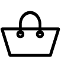
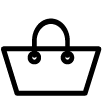

Velkommen til
Genbrugelige flade flasker, som passer i din taske, står og ligger stabilt, samt hjælper med at reducere plastikspild!


 
Flasker! Op til 25% Rabat ved første købSHOP
Genbrugelige flade flasker, som passer i din taske, står og ligger stabilt, samt hjælper med at reducere plastikspild!
Idéen om at udbrede den flade vandflaske, opstod i mødet med de problematikker vi oplevede med den klassiske drikkedunk - pladsmangel på skrivebordet, rod i tasken, den grimme engangsflaske og den dårlige samvittighed ved at smide plastik ud.
Derfor blev VANDRET etableret i 2017, med en vision om at gøre det mere attraktivt at benytte en genbrugelig flaske med funktion i fokus og design for øjet.
Der er lagt fokus på produktets minimalistiske og stilrene udseende. Den fås kun i ét udtryk - gennemsigtig med hvidt logo på låget. Flasken er designet med det ergonomiske udbytte i fokus, således, at den føles rar at have i hånden. Produktet har altså en god smagsmæssig kvalitet.
Du kan læse om BPA (Bisphenol A) og hvorfor det er vigtigt at vælge en BPA fri drikkedunk på produkt siden.
Vandflaske er sikkeret imod frost og holder vandet flydende.

Drypfri vandflaske som ikke lækker.
Se på køb siden for at få flere detaljer angående køb.
Genanvendelige vandflasker er et must for alle, der ønsker at slukke deres tørst uden at på virke miljøet og efterlade plast. Vandrets Vandflaske er en god flaske med flot design som er noget helt speciel og anderledes.
Det er aldrig for sent at begynde på at drikke mere vand. Men hvis du vil gøre det med stil så er Vandrets Vandflaske en god mulighed. Du får ikke kun en gode BPA-fri flaske, men du kommer til at føle dig trendy mens du drikker vandet.